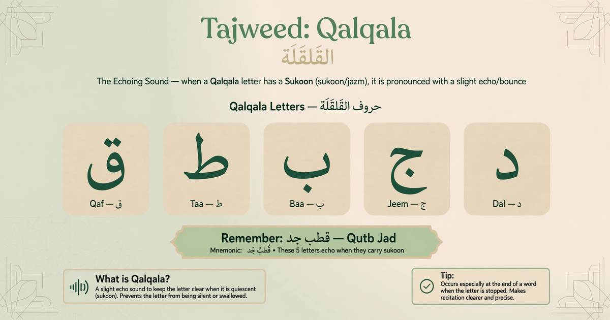

What Is Qalqala in Tajweed? Letters, Types & Examples

Qalqala (القلقلة) is a slight bouncing or echoing sound produced when one of five Arabic letters is pronounced with sukoon. These letters are Qaf (ق), Taa (ط), Baa (ب), Jeem (ج), and Dal (د), remembered through the phrase Qutb Jad (قطب جد).
Learning Qalqala helps beginners improve Quran pronunciation and avoid making a sakin letter sound as though it has an extra vowel. The sound should be clear and controlled, without exaggerating the bounce.
Practice Qalqala with a teacher who can listen to your pronunciation and correct mistakes during a live lesson.
Book Your Free Trial →What Are the Five Qalqala Letters?
The five Qalqala letters are grouped together in the Arabic phrase قُطْبُ جَدٍّ, commonly written without vowel marks as قطب جد.
- ق — Qaf: Example: أَقْسَمُوا — the Qaf has sukoon.
- ط — Taa: Example: يَطْمَعُ — the Taa has sukoon.
- ب — Baa: Example: وَابْتَغُوا — the Baa has sukoon.
- ج — Jeem: Example: يَجْعَلُ — the Jeem has sukoon.
- د — Dal: Example: قَدْ — the Dal has sukoon.
Remember that the presence of one of these letters does not automatically mean Qalqala is required. The letter must be sakin, either because it already has sukoon or because it becomes sakin when you stop on it.
How Does Qalqala Work?
When a Qalqala letter has sukoon, pronounce it clearly with a slight bounce. Do not add a full Fatha, Kasra, or Damma sound after it.
For example, in يَجْعَلُ, the Jeem (جْ) is sakin. Give the letter its clear Qalqala sound before moving to the next letter.
When stopping on a word such as أَحَدْ, the Dal becomes sakin at the stopping point, so Qalqala is applied there as well.
Types of Qalqala in Tajweed
Many Tajweed lessons explain Qalqala using two main levels: Sughra and Kubra. Some teaching traditions distinguish additional levels, including Wusta, depending on how the letter occurs and where the reciter stops.
1. Qalqala Sughra (Minor Qalqala)
Qalqala Sughra generally occurs when a Qalqala letter has an original sukoon within a word and the reciter continues reading. The bounce is clear but controlled.
Example: يَجْعَلُ — the Jeem (جْ) is sakin in the middle of the word.
2. Qalqala Kubra (Major Qalqala)
Qalqala Kubra occurs when the reciter stops on a word ending in a Qalqala letter. The stopping creates a sukoon, and the letter's bounce is more noticeable than in the usual continuing-reading example.
Example: الْفَلَقْ — when stopping on the final Qaf (ق), pronounce the Qaf clearly with Qalqala.
3. Qalqala on a Letter with Shaddah
When stopping on a Qalqala letter carrying a Shaddah, the letter needs particular care because the doubled consonant must remain clear. Some teaching systems call this the strongest level or distinguish it as Qalqala Akbar.
Example: الْحَقّ — when stopping on this word, give the final Qaf its proper doubled articulation and Qalqala without adding an extra vowel.
Note: The names and number of Qalqala levels can differ between Tajweed teaching systems. Focus first on identifying the five letters, recognizing sukoon, and producing the sound correctly.
Common Qalqala Mistakes to Avoid
- Adding an extra vowel: Do not pronounce a sakin letter as if it were followed by an extra Fatha, Kasra, or Damma.
- Overdoing the bounce: Qalqala should be audible but not exaggerated.
- Forgetting Qalqala when stopping: A Qalqala letter at the end of a word may become sakin when you stop.
- Confusing the letters: Memorize ق ط ب ج د so you can identify them while reading.
- Practicing without feedback: Listening to a qualified reciter and receiving corrections can help you develop more accurate pronunciation.
Learn Qalqala Online with a Quran Teacher
Reading about Tajweed is a useful starting point, but hearing and practicing the sound can help you apply the rule correctly. Al Shimaa Quran Academy offers live online Quran lessons with male and female teachers for students at different levels.
- After-School Quran Classes for Kids in the USA — structured Quran learning for children.
- Quran Classes for Sisters in the USA — learn with a female teacher if preferred.
- Online Quran Classes for Adults in the UK — Quran learning for adults with flexible scheduling.
Meet our Quran teachers or explore our online Tajweed course to learn more about guided recitation practice.
Continue Your Quran Learning
FAQs: Qalqala in Tajweed
What are the five Qalqala letters?
The five letters are Qaf (ق), Taa (ط), Baa (ب), Jeem (ج), and Dal (د). They are remembered through the phrase Qutb Jad (قطب جد).
What are the types of Qalqala?
Many lessons teach two main levels, Sughra and Kubra. Some teaching systems distinguish additional levels when stopping on a Qalqala letter, especially a letter with Shaddah.
When should I pronounce Qalqala?
Pronounce Qalqala when one of the five letters has sukoon, including when a letter becomes sakin because you stop at the end of a word.
How can I learn Qalqala online?
Practice Quranic examples and listen to a qualified Quran teacher. Live lessons can help you correct your pronunciation and avoid adding an extra vowel.